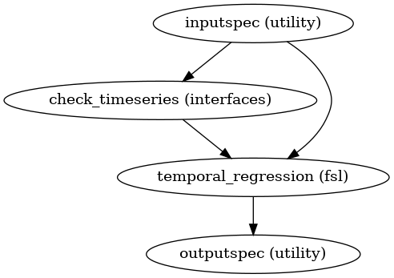
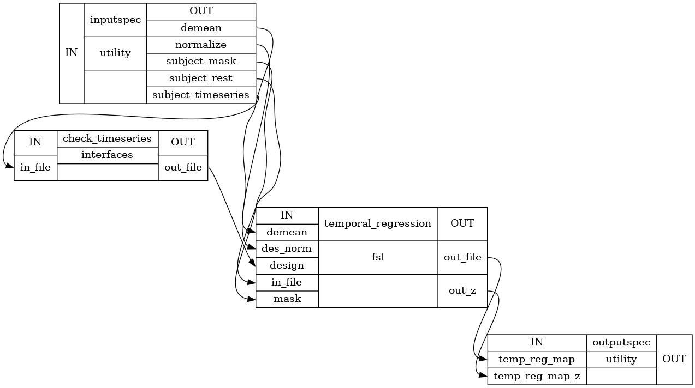

Seed Based Correlation Analysis¶
-
CPAC.sca.compute_fisher_z_score(correlation_file, timeseries_one_d)[source]¶ Computes the fisher z transform of the input correlation map If the correlation map contains data for multiple ROIs then the function returns z score for each ROI as a seperate nifti file
- Parameters
- correlation_file: string
Input correlations file
- Returns
- out_filelist (nifti files)
list of z_scores for mask or ROI
-
CPAC.sca.create_sca(name_sca='sca')[source]¶ Map of the correlations of the Region of Interest(Seed in native or MNI space) with the rest of brain voxels. The map is normalized to contain Z-scores, mapped in standard space and treated with spatial smoothing.
- Parameters
- name_scaa string
Name of the SCA workflow
- Returns
- sca_workflowworkflow
Seed Based Correlation Analysis Workflow
Notes
- Workflow Inputs::
- inputspec.rest_res_filtstring (existing nifti file)
Band passed Image with Global Signal , white matter, csf and motion regression. Recommended bandpass filter (0.001,0.1) )
- inputspec.timeseries_one_dstring (existing nifti file)
1D 3dTcorr1D compatible timeseries file. 1D file can be timeseries from a mask or from a parcellation containing ROIs
- Workflow Outputs::
- outputspec.correlation_filestring (nifti file)
Correlations of the functional file and the input time series
- outputspec.Z_scorestring (nifti file)
Fisher Z transformed correlations of the seed
SCA Workflow Procedure:
Compute pearson correlation between input timeseries 1D file and input functional file Use 3dTcorr1D to compute that. Input timeseries can be a 1D file containing parcellation ROI’s or a 3D mask
Compute Fisher Z score of the correlation computed in step above. If a mask is provided then a a single Z score file is returned, otherwise z-scores for all ROIs are returned as a list of nifti files
Workflow:

Detailed Workflow:

Examples
>>> sca_w = create_sca("sca_wf") >>> sca_w.inputs.inputspec.functional_file = '/home/data/subject/func/rest_bandpassed.nii.gz' >>> sca_w.inputs.inputspec.timeseries_one_d = '/home/data/subject/func/ts.1D' >>> sca_w.run()
-
CPAC.sca.create_temporal_reg(wflow_name='temporal_reg', which='SR')[source]¶ Temporal multiple regression workflow Provides a spatial map of parameter estimates corresponding to each provided timeseries in a timeseries.txt file as regressors
- Parameters
- wflow_namea string
Name of the temporal regression workflow
- which: a string
SR: Spatial Regression, RT: ROI Timeseries
NOTE: If you set (which = ‘RT’), the output of this workflow will be renamed based on the header information provided in the timeseries.txt file. If you run the temporal regression workflow manually, don’t set (which = ‘RT’) unless you provide a timeseries.txt file with a header containing the names of the timeseries.
- Returns
- wflowworkflow
temporal multiple regression Workflow
Notes
Workflow Inputs:
inputspec.subject_rest : string (existing nifti file) Band passed Image with Global Signal , white matter, csf and motion regression. Recommended bandpass filter (0.001,0.1) ) inputspec.subject_timeseries : string (existing txt file) text file containing the timeseries to be regressed on the subjects functional file timeseries are organized by columns, timepoints by rows inputspec.subject_mask : string (existing nifti file) path to subject functional mask inputspec.demean : Boolean control whether to demean model and data inputspec.normalize : Boolean control whether to normalize the input timeseries to unit standard deviation
Workflow Outputs:
outputspec.temp_reg_map : string (nifti file) GLM parameter estimate image for each timeseries in the input file outputspec.temp_reg_map_zstat : string (nifti file) Normalized version of the GLM parameter estimates
Temporal Regression Workflow Procedure:
Enter all timeseries into a general linear model and regress these timeseries to the subjects functional file to get spatial maps of voxels showing activation patterns related to those in the timeseries.
Workflow:
Detailed Workflow:
References
http://fsl.fmrib.ox.ac.uk/fsl/fslwiki/DualRegression/UserGuide
Examples
>>> tr_wf = create_temporal_reg('temporal regression') >>> tr_wf.inputs.inputspec.subject_rest = '/home/data/subject/func/rest_bandpassed.nii.gz' >>> tr_wf.inputs.inputspec.subject_timeseries = '/home/data/subject/func/timeseries.txt' >>> tr_wf.inputs.inputspec.subject_mask = '/home/data/spatialmaps/spatial_map.nii.gz' >>> tr_wf.inputs.inputspec.demean = True >>> tr_wf.inputs.inputspec.normalize = True >>> tr_wf.run()
{kind=link}
{kind=link}
-
CPAC.sca.map_to_roi(timeseries, maps)[source]¶ Renames the outputs of the temporal multiple regression workflow for sca according to the header information of the timeseries.txt file that was passed NOTE: This is only run if the temporal regression is run as part of sca
(which = ‘RT’) when calling the temporal regression workflow. If you run the temporal regression workflow manually, don’t set (which = ‘RT’) unless you provide a timeseries.txt file with a header containing the names of the timeseries
- timeseries: string
Input timeseries.txt file
- maps: List (nifti files)
List of output files generated by the temporal regression workflow if (which == ‘RT’)
- labelsList (strings)
List of names that the output files should be renamed to
- maps: List (nifti files)
List of output files generated by the temporal regression workflow if (which == ‘RT’)